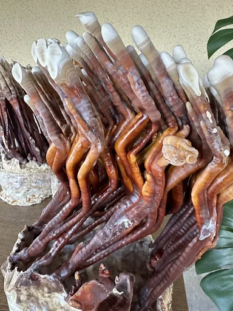
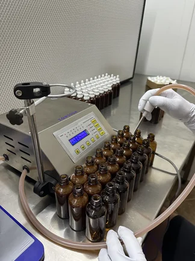

Services

Reishi cultivation (Ganoderma lucidum)

Other services
Medicinal mushroom extractions
In our lab we developed and standardized our own medicinal mushroom extraction process, built on science-based principles and supported by published literature, along with our internal measurements and experience. The key is not a single “magic parameter” but efficiency and repeatability — achieving the best and most consistent yield of the target fractions for each mushroom. Exact parameters (ratios, times, phase order and solvent selection) are part of our internal know-how and are adapted depending on species and target fractions.
Because medicinal mushrooms have a structurally resistant cell wall (e.g., chitin, β-glucans), releasing bioactives is often more demanding than for most botanicals.[1][2] We prepare the raw material to preserve actives; for Reishi we use a two-stage drying approach with final vacuum drying, and similar principles are adapted to other species where appropriate.[7][8] Extraction is performed sequentially (multi-stage) with solvents of different polarity to capture water-soluble fractions (polysaccharides/β-glucans) and alcohol-soluble fractions (e.g., triterpenoids/phenolics).[6]
We further increase yield using ultrasound-assisted extraction (UAE), where acoustic cavitation accelerates mass transfer and helps release compounds from the matrix. UAE efficiency is well documented for mushroom bioactives, including parameter optimization for higher yields and/or lower process temperatures.[4][5][6] We also use a high solvent-to-solid ratio (typically ~30–40 mL/g, depending on species and target fraction), consistent with published extraction optimizations.[6][9][10] After extraction, excess solvent is removed by low-temperature vacuum concentration (≈ 35–45 °C), and fractions are combined and formulated into the final extract (alcohol-based or glycerin-based).
What the process includes
- Raw material intake & preparation: receipt, QC moisture check, drying to ~8% moisture, milling into a homogeneous fraction.
-
Triple batch extraction:
- ethanol extraction (triterpenes, hericenones, phenolics)
- hot-water extraction (≈ 80–90 °C, polysaccharides)
- pressurized water extraction (≈ 120–130 °C, high-molecular compounds)
- Fraction blending & formulation into the final extract (alcohol or alcohol-free glycerin version).
Technology highlights
- Ultrasound-assisted extraction with temperature control.
- High solvent-to-solid ratios to maximize extraction yield.
- Low-temperature vacuum concentration.
Input material
- Reishi (Ganoderma lucidum) from our own cultivation (mycelium → fruiting bodies).
- Other medicinal mushroom species by arrangement — we can also process customer-supplied raw material.
Solvents and formulations
- Food-grade ethanol, purified water (reverse osmosis) and vegetable glycerin (Ph. Eur.).
- Option for alcohol-based or alcohol-free (glycerin) tinctures.
- Optional sunflower lecithin (stability, bioavailability) and vitamin C (antioxidant protection).
Standardization & quality control
- Dry matter %, ethanol %, glycerin %, density and organoleptic checks.
- When needed: microbiological analyses and heavy metals (Pb, Cd, Hg).
- Basic stability checks of the final formulation.
- Internal QC: minimum dry matter targets per species (see table below).
Compliance & documentation
- Work performed in line with a HACCP / GMP approach.
- SOP / work-instruction system and full lot traceability.
- Ethanol handling is managed with traceability and legal compliance (excise-related records as applicable).
Sediment in medicinal mushroom tinctures — a sign of high concentration, not a defect
Our tinctures are intentionally not filtered to full clarity, because that would remove part of the bioactive fraction. A natural sediment is therefore a normal and desirable phenomenon — a sign of high bioactive concentration, not a production mistake.
Each phase (ethanol and water extractions) is thoroughly filtered first. Sediment typically appears only after combining the water fraction (rich in polysaccharides and β-glucans) with the ethanol fraction (containing triterpenes and other alcohol-soluble compounds). Because polysaccharides and β-glucans are poorly soluble or insoluble in ethanol, part of them naturally precipitates.
This natural sediment usually contains mostly water-soluble polysaccharides and β-glucans originating from the aqueous part of the extract. This can occur across species, including Reishi, where a fine precipitate may form after combining phases (typically less pronounced than in very high-solids species such as Lion’s Mane).
Tinctures with almost no sediment often contain fewer polysaccharides or may be filtered/diluted to the point where these fractions are low.
Dry matter (and therefore sediment amount) varies between species. Our minimum and typical dry matter values are:
| Species | Minimum dry matter (%) | Typical dry matter (%) | Characteristic |
|---|---|---|---|
| Reishi (Ganoderma lucidum) | ≥ 4 % | ≈ 5 % | less pronounced, but present polysaccharide/β-glucan sediment |
| Chaga (Inonotus obliquus) | ≥ 6 % | ≈ 8.5 % | moderate sediment; rich in melanins, betulin and polysaccharides |
| Lion’s Mane (Hericium erinaceus) | ≥ 10 % | ≈ 13 % | substantial sediment due to very high polysaccharide content |
References
- Latgé J-P, Wang T. Modern Biophysics Redefines Our Understanding of Fungal Cell Wall Structure, Complexity, and Dynamics. mBio. 2022. DOI: 10.1128/mbio.01145-22.
- Bekirian C, et al. β-1,6-glucan plays a central role in the structure and remodeling of the bilaminate fungal cell wall. eLife. 2024.
- Chemat F, et al. Advances in ultrasound assisted extraction of bioactive compounds: Mechanisms and applications. Ultrasonics Sonochemistry. 2019.
- Hu D-B, et al. Ultrasound-assisted extraction optimization of polyphenols from mushroom (RSM study). Frontiers in Nutrition. 2023.
- Zheng S, et al. Optimization of ultrasonic-assisted extraction of polysaccharides and triterpenoids from Ganoderma lucidum. PLOS ONE. 2020.
- Chin S-K, Law C-L. Maximizing the Retention of Ganoderic Acids and Water-Soluble Polysaccharides Content of Ganoderma lucidum Using Two-Stage Dehydration Method. Drying Technology. 2014.
- Li Y, et al. Effects of drying methods on bioactive components in Ganoderma lucidum (incl. vacuum drying). Food Research International. 2023.
- Gao Y, et al. Study of the Extraction Process and In Vivo Inhibitory Effect of Ganoderma lucidum Triterpenes. Molecules. 2011.
- Zheng S, et al. (Liquid/solid ratio influence in optimized extraction). PLOS ONE. 2020.
Reishi cultivation
At GoMushroom we grow Reishi (Ganoderma lucidum) end-to-end — from mycelium propagation and substrate preparation/sterilization to controlled fruiting. We work in small batches and manually inspect each bag, which helps us maintain stable growth conditions, high raw material quality, and full traceability from strain selection to the final tincture batch. We most often choose the antler morphology, because research suggests it can be associated with a higher content of key Reishi bioactives, especially triterpenes — specifically ganoderic acids. [1] [2] [3]
How we cultivate Reishi
- Mycelium → sterile substrate → fruiting bodies (antlers or cap)
- All stages in-house: mycelium work, substrate preparation/sterilization and fruiting in a controlled environment
- Organic ingredients: wheat bran, millet, rye, beech sawdust from the Kočevje forests
- Small batches: manual inspection of every bag
- Traceability: from strain to tincture batch
- Antler conditions: limited airflow, elevated CO₂ and controlled light
Why antlers: a natural response and a more “triterpenoid-oriented” profile
Antlers develop as a natural response to specific cultivation conditions. In a controlled environment with limited ventilation (therefore higher CO₂) and controlled light, Reishi can form a branched antler morphology rather than a cap. Controlled studies show that manipulating ventilation (CO₂) and light can reliably induce antler formation, while also influencing the bioactive profile and antioxidant potential of extracts. [4]
Triterpenes and bioactivities have also been described from antler-form G. lucidum, supporting the idea that antlers — as a “stress morphology” — may contribute to a richer secondary metabolite profile. [5]
Literature
- Wu, S. et al. (2022). Ganoderma lucidum: A comprehensive review of phytochemistry, efficacy, safety and clinical study. Food Science and Human Wellness. DOI: 10.26599/FSHW.2022.9250051 · SciOpen: link
- Xia, Q. et al. (2014). A Comprehensive Review of the Structure Elucidation and Biological Activity of Triterpenoids from Ganoderma spp. Molecules, 19(11), 17478–17535. DOI: 10.3390/molecules191117478
- Wang, S. et al. (2024). Research Progress on the Biological Activity of Ganoderic Acids in Ganoderma lucidum over the Last Five Years. Open access (PMC)
- Sudheer, S. et al. (2018). Development of antler-type fruiting bodies of Ganoderma lucidum and determination of its biochemical properties. Fungal Biology, 122(5), 293–301. DOI: 10.1016/j.funbio.2018.01.007 · PubMed: 29665955
- Shao, H. et al. (2024). Triterpenes from antler-shaped fruiting body of Ganoderma lucidum and their hepatoprotective activities. Phytochemistry, 224, 114148. DOI: 10.1016/j.phytochem.2024.114148 · PubMed: 38763311
Botanical extractions
- Spruce tips & selected plants; EtOH / glycerin / H₂O
- Same QC mindset as for mushrooms (HACCP/GMP)
- By arrangement: target profile, taste, viscosity, filling
Substrate sterilization
- Preparation of substrates from organic ingredients
- Sterilization of substrates and grain
- Agar media preparation and sterilization
- Mycelium inoculation
Approach — triple extraction & vacuum concentration
We push each species to its maximum — repeatable, traceable and gentle on sensitive compounds.
Step 1
Triple extraction
Ethanol → hot water → pressurized water. Each stage targets a different compound spectrum for a full-profile extract.
Step 2
High solvent volume
Plenty of solvent prevents fast saturation, maintains mass transfer and improves extraction yield.
Step 3
Ultrasound support
Ultrasound micro-cavitation loosens the matrix, accelerates extraction and increases yield.
Step 4
Vacuum concentration
We remove solvents at lower temperatures to better preserve sensitive compounds, plus natural aroma and color.
QC 1
Quality
Internal QC for raw materials and finished products: dry matter, density, extractable fraction and batch traceability.
QC 2
Compliance
Work follows HACCP principles and a GMP approach; ethanol use is managed with appropriate traceability and records.
Gallery


References — Fungalist
Our core partner is Fungalist, where you can find our tinctures.


Contact GoMushroom — medicinal mushroom extraction lab
Interested in collaborating with GoMushroom? Send me a message and briefly describe what you’re looking for (product, raw material, development, wholesale, or a custom project). I reply quickly and suggest next steps: a short call, alignment on goals, then a proposal (timeline, volumes, specifications) and execution plan.